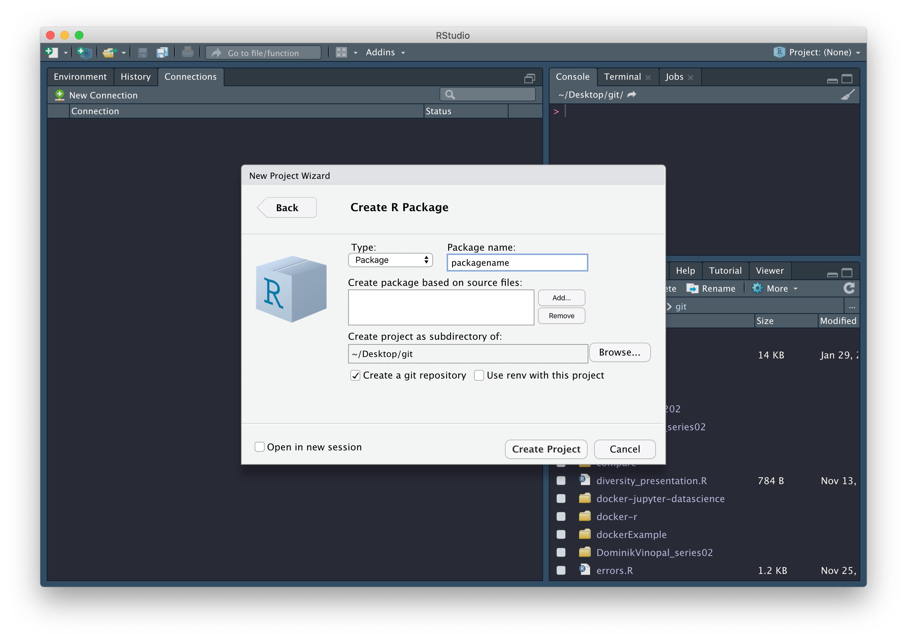
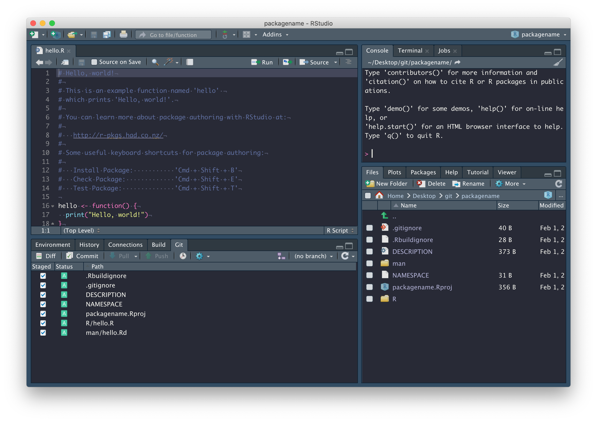
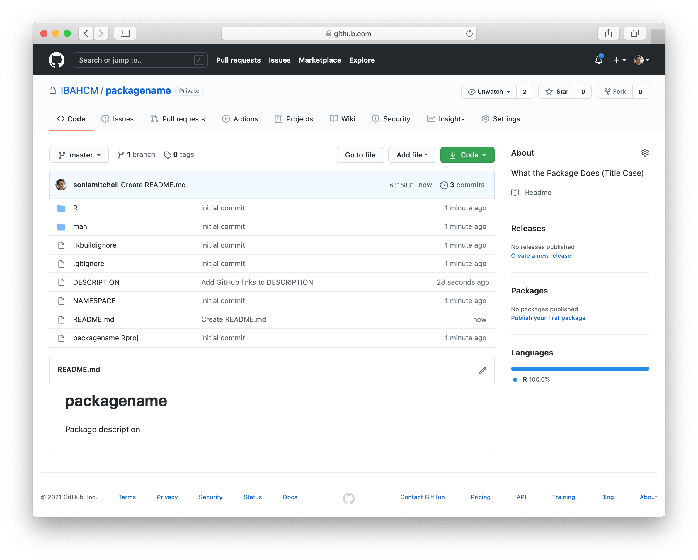
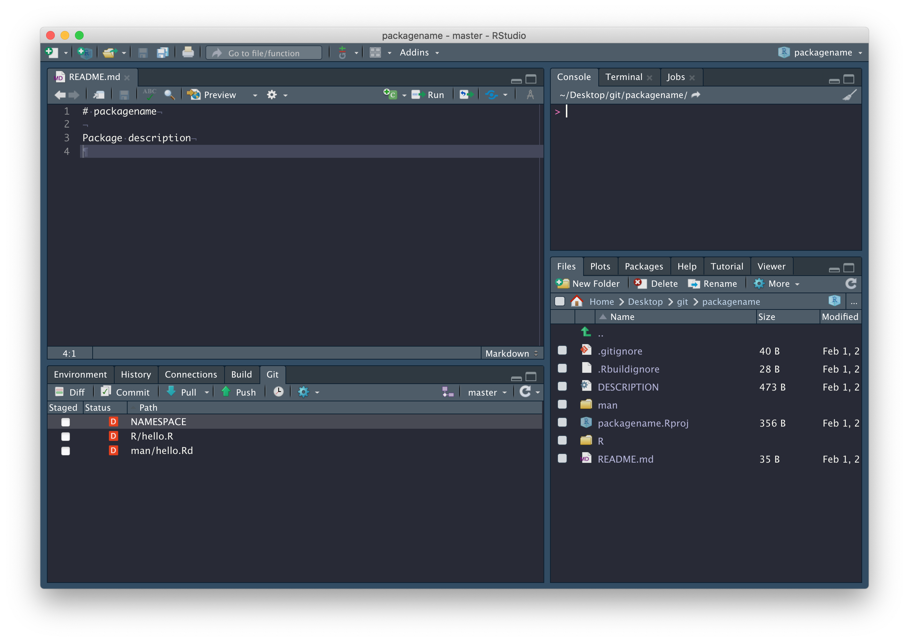
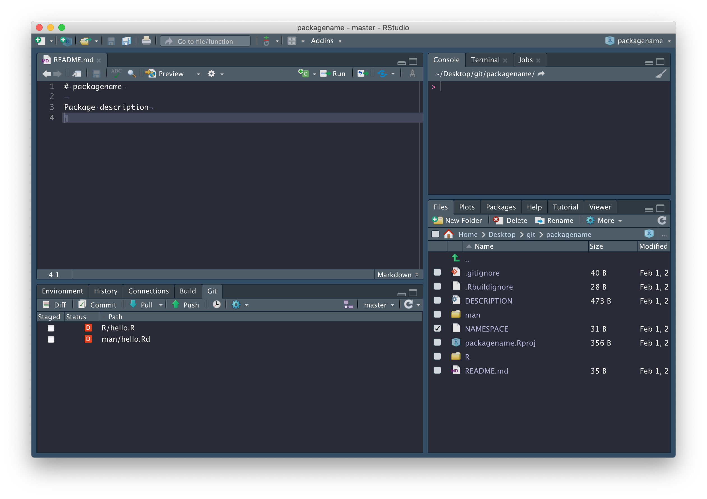
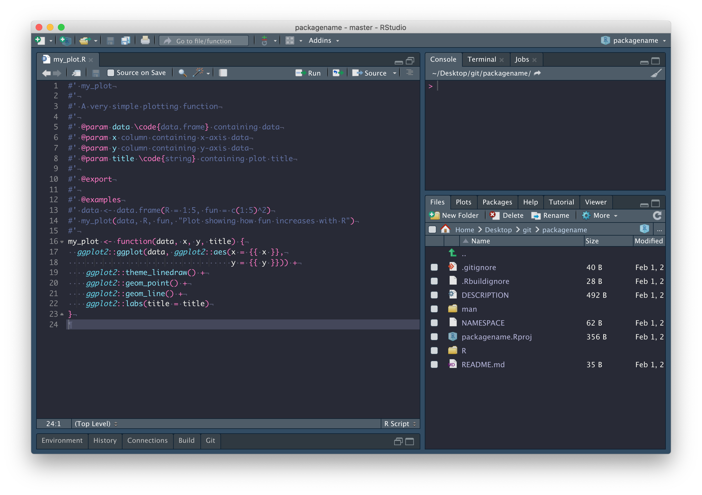
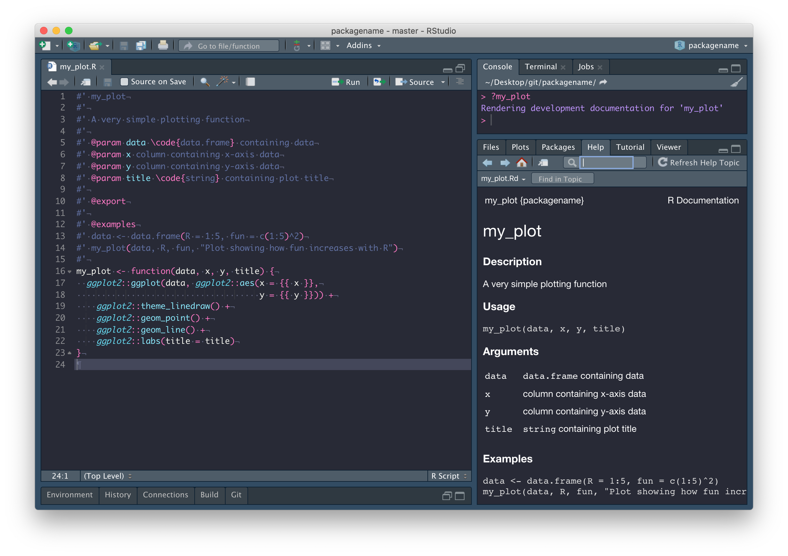
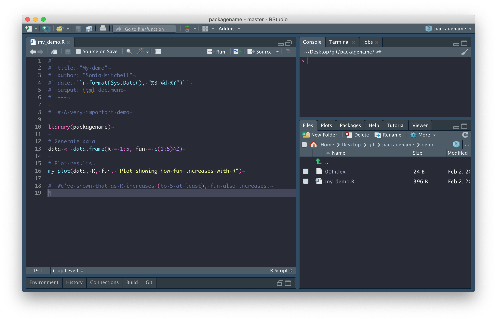

R Packages
February 15 2021
packages_guide.RmdR packages
Warning: If for any reason you can’t get usethis::use_github() to work, then skip to the end of the page and follow the alternative setup instructions.
Package structure
The easiest way to create an R package in RStudio is to generate one automatically in the menus, via File > New project… > New Directory > R Package. Give your package a suitably descriptive name packagename, remembering that it’s good practice for the name of your repository to match the name of your package. It’s important to be aware that the name of a package:
“should contain only (ASCII) letters, numbers and dot, have at least two characters and start with a letter and not end in a dot” (ref).
Though very few package names include a dot.
Once you’ve picked a good name, check the box next to Create a git repository, then click on Create Project.

You should find that (1) a new RStudio project has been created called packagename, (2) your working directory is now packagename, and (3) inside this directory are a number of files and directories:

We’ll explore these files in due course. In the mean time, commit these files with a nice descriptive comment, but don’t push just yet.

First, we need to set up a GitHub repository and while there are a number of ways to do this, the easiest way to connect an existing RStudio project to GitHub is by running this:
usethis::use_github(organisation = "IBAHCM", private = TRUE)This process will automatically edit your DESCRIPTION file and ask whether it’s OK to commit these changes, so just say yes, and your GitHub repository should open automatically in a window in your browser.

We don’t have a README yet, so click Add a README and type something nice in your README file (in your browser), then scroll down and Commit new file. Your GitHub repository should now look something like this:

and RStudio should look like this:

Now that we’re connected to GitHub, click on the blue Pull arrow. When you do this, you should see that the README.md file has been pulled down from GitHub and is in your working directory, with contents matching what you wrote on GitHub. Open it and confirm this for yourself, and close that hello.R file – it was automatically generated by RStudio and we don’t need it.

In fact, there are a few files we should delete: R/hello.R, man/hello.Rd (documentation related to the hello.R file we don’t need), and the NAMESPACE file in the package root.

Now run devtools::document() from the package root. You’ll notice, in the Git tab, NAMESPACE has changed from deleted to modified. This is because devtools::document() created a new NAMESPACE file. Why did we just delete and recreate NAMESPACE? Because from now on, it will be automatically populated whenever we call devtools::document(), which is only possible if we use devtools::document() to create a new file.

Package documentation
Now we’re going to write some documentation for our package. To do this we need to create a new file called packagename-package.R (replacing packagename with the name of your own package). Save this file in the R directory.
Once we’ve finished writing the file, we run devtools::document() to generate the documentation files and ?packagename to load the documentation into RStudio.
As you can see, below:
- The first line is the package title
- The second chunk of text (separated by a blank line) is the package Description
- The third chunk of text (separated by a blank line) is the Details section
After that everything is labeled with a tag, so order doesn’t matter
-
@authoris Author(s) - There’s no object to represent the package, so we write
NULL(on line 15), but manually label it with the@docType,@name, and@aliastags (lines 11-13).

The next thing we need to do is edit the DESCRIPTION file, more info here. Most of this requires following prompts in the template. The only thing I’ve done differently here is combine Author and Maintainer into a single entry, i.e.
Author: Who wrote it
Maintainer: The package maintainer <yourself@somewhere.net>has been changed to
Authors@R: person("Sonia", "Mitchell", email = "sonia.mitchell@glasgow.ac.uk",
role = c("cre", "aut"), comment = c(ORCID = "0000-0003-1536-2066"))because it allows us to include more information, more info here.

Functions and documentation
Now I’m going to add a new function (you can add any function you like). Make sure the name of your function is the same as the file you’re writing in and save it in the R directory. I’ve also added some documentation above the function (details described below).
We can run devtools::document() in the package root to populate the NAMESPACE and automatically generate the documentation files in the man directory. After which you can run ?my_plot to look at it.

The first line is the title.
#' my_plotThe next section (separated by a blank line) is the Description. The description can continue onto multiple lines so long as you don’t start writing paragraphs with blank lines between them. This is true for all of the following examples.
#' A very simple plotting functionUsage is generated automatically from the function itself.
After that everything has been labeled with a tag, so order doesn’t really matter, but the @param tag is used to document the Arguments. Note the format here is @param argument description.
#' @param data \code{data.frame} containing data
#' @param x column containing x-axis data
#' @param y column containing y-axis data
#' @param title \code{string} containing plot titleThe @return tag is used to document the output of the function in the Value section.
#' @return Returns a \code{ggplot} objectThe @export tag is used to identify this function as being exported by your package. That is, a function intended to be usable and not internal (a function that cannot be called, but is used internally by other functions).
#' @exportFinally, the @examples tag is used to document the Examples section. Note that here, you can use blank lines if you want and as usual, comments are encouraged.
#' @examples
#' # Generate data
#' data <- data.frame(R = 1:5, fun = c(1:5)^2)
#' # Plot results
#' my_plot(data, R, fun, "Plot showing how fun increases with R")We want to be able to install this function as part of our package, but there’s one thing left to do before we can do that. Our function, my_plot() is dependent on the ggplot2 package. That is, my_plot() uses functions from the ggplot2 package and therefore needs ggplot2 to be installed before it will work. We can configure our package so that this happens automatically.
Add dependencies
As mentioned previously, our my_plot() function is dependent on the ggplot2 package and so, we need to add a dependency on ggplot2 to our package. To do this we need to do four things.
-
Inside the
my_plot()function, we need to explicitly say thatggplot(),aes(),theme_linedraw(),geom_point(),geom_line(), andlabs()come from theggplot2package. This is done by prepending them withggplot2::.my_plot <- function(data, x, y, title) { ggplot2::ggplot(data, ggplot2::aes(x = {{ x }}, y = {{ y }})) + ggplot2::theme_linedraw() + ggplot2::geom_point() + ggplot2::geom_line() + ggplot2::labs(title = title) } -
Add an entry in the
Importsfield of the DESCRIPTION file (lines 15-16). This can be automated usingusethis::use_package("ggplot2").
Note that if you need to add a dependency on a package that exists within a GitHub repository, you can use this instead:
usethis::use_dev_package("RPiR", remote = "IBAHCM/RPiR") -
Add an
@importtag to the packagename-package.R file (see line 15).
Run
devtools::document()to populate the NAMESPACE file from the@importtag in packagename-package.R. Note that you should never edit NAMESPACE by hand.
Add a demo
The last thing we’re going to do is add a demo file. To do that we need to add a demo directory to the package root. This is where the demos live.
Next we need to create a 00Index file (with no file extension) inside the demo directory. This file must list the names of the demos installed as part of your package. The file itself should look something like this:
my_demo A simple demo
Note that each entry should be written on a new line, in a standard format. That is, the name of the demo (it’s filename), followed by (at least) three spaces, followed by a simple description. Also note the empty line at the end of the file.
Now we’re going to add a demo, which is a standard R file (in this case including a little R markdown).
The important thing to note here is that you no longer need to
source()files, since any functions you need to use can be installed as part of the package.

Next, we need to install our package using devtools::install().
After which, we can run demo(package = "packagename") to list all of the demos in our package, or demo("my_demo", package = "packagename") to run the my_demo demo.
Add data
The next thing we’re going to do is add data to our package. To do this, run usethis::use_data_raw("BCI"). This will create a new directory, called data-raw and within it a file called BCI.R. We should put our raw, unedited data in this directory. Any code we use to process our data should be written in BCI.R. The processing file should end up looking something like this:
## code to prepare `BCI` dataset goes here
# Read the data
raw.data <- read.csv("data-raw/myrawdata.csv", header = TRUE)
# Process the data
BCI <- some_tidying_process(raw.data)
# Add the data to your package
usethis::use_data(BCI, overwrite = TRUE)Next we need to generate the packaged data by running the processing script. The use_data() function will create a data directory, within which will be an rds file containing our dataset.
The next step is to open our .gitignore file and add data-raw on a new line to ignore the contents of this directory. The reason being, the contents of data-raw are not part of the package (installable data exists within your data directory) and we don’t want to upload these large files to GitHub.
Next we should document our data (more info here and here). To do that, we need to create a data.R file in the R directory. It should look something like this:
#' mydataset
#'
#' Description of mydataset
#'
#' @docType data
#' @usage data(mydataset)
#'
#' @format A data frame with x rows and y variables:
#' \describe{
#' \item{variable1}{description}
#' \item{variabl2}{description}
#' ...
#' }
#'
#' @source \url{http://somewhere.important.com/}
"mydataset"As usual, we need to run devtools::document() in the package root to automatically generate the documentation files and then devtools::install() to install our package.
After which, we can run data(package = "packagename") to list all of the data in our package.
Alternative setup
If for any reason you can’t get usethis::use_github() to work, then follow these instructions to create a repository on GitHub with a README file. Remember that the name of your repository should match the name of your package and be aware that the name of your package:
“should contain only (ASCII) letters, numbers and dot, have at least two characters and start with a letter and not end in a dot” (ref).
Though very few package names include a dot. In the following example, the name of our repository (and package) is packagename.
Once you have a repository on GitHub, follow these instructions to clone your repository and add it as a new project in RStudio. Then create the package structure by running:
usethis::create_package("structure")at which point you’ll get a warning saying you shouldn’t really be nesting RStudio projects inside each other. Ignore that and say yes, you want to continue. You’ll end up with a file structure that looks a bit like this:
packagename/ ---> .gitignore
README.md
packagename.Rproj
structure/ ---> .gitignore
.Rbuildignore
DESCRIPTION
NAMESPACE
structure.Rproj
R/
Take everything in the structure directory except for the structure.Rproj and .gitignore files and put it in the packagename directory. Now delete the structure directory and move to the packagename project in RStudio. Once you’ve done that, create an empty directory within packagename called man. Your file structure should now look like this:
packagename/ ---> .gitignore
README.md
packagename.Rproj
.Rbuildignore
DESCRIPTION
NAMESPACE
R/
man/Finally, delete the NAMESPACE file and run devtools::document() from the package root to create a new NAMESPACE file. Why did we just delete and recreate NAMESPACE? Because from now on, it will be automatically populated whenever we call devtools::document(), which is only possible if we use devtools::document() to create a new file. Also, don’t forget to keep pushing your changes to GitHub.
You can now rejoin the instructions above here.
Final thoughts
If you get stuck and need to troubleshoot your package, try running devtools::check(). This will build your package in a clean environment and potentially highlight any issues that might be causing problems.
Whenever you make a change to your package (particularly when you’re pushing to GitHub), you should try to get into the habit of changing the version number. This is important because it allows you to keep track of which version of the code is being used in a particular analysis. The format is usually major.minor.patch, more info here.
The version of your package is recorded in the DESCRIPTION file, like this:
Version: 0.1.0Here, we have added more than enough to warrant increasing version number from 0.1.0 to 0.2.0, so do that now. Remember to push this change to GitHub too.